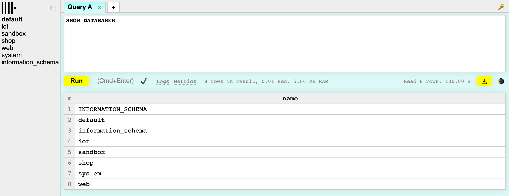
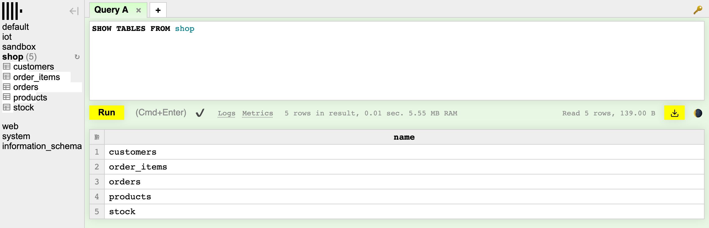
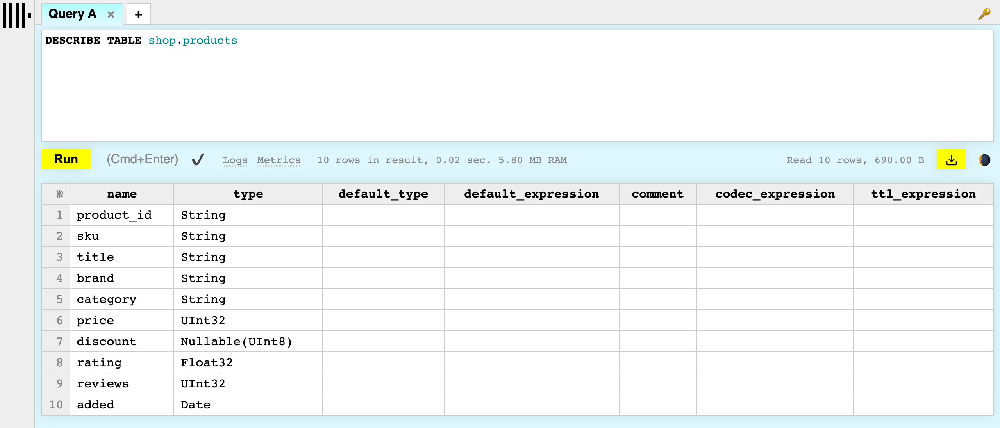
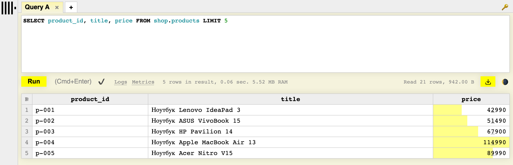

Справочник по ClickHouse · модуль 1 · первые данные
Глава 1.1
Сервер, база,
таблица
В этой главе найдём каталог товаров на работающем сервере, прочитаем его структуру и получим несколько строк. Для этого нужны уже запущенный стенд и подключённый клиент.
- Категория
- Первые запросы
- Уровень
- Начальный
- Связанные темы
- 1.2 Типы данных · 1.3 Пустое значение · 1.6 Чтение
- Понадобится
- поднятый стенд, Play UI или clickhouse-client
§1Задача: открыть каталог магазина
Вы уже подключились к стенду через Play UI или clickhouse-client. Теперь нужно выяснить: какие товары есть в каталоге и какие сведения о них хранятся. Не начинайте с догадки об имени столбца. Сначала пройдите путь от базы до строк:
- посмотреть базы на подключённом сервере;
- посмотреть таблицы базы
shop; - прочитать описание таблицы
shop.products; - получить несколько строк товаров.
Команды этого маршрута только читают сведения и строки. Сначала разберём, как связаны объекты, которые предстоит найти.
§2Сервер, база, таблица и столбец
Сервер ClickHouse — работающая программа, которая принимает запросы, управляет хранением данных и выполняет операции с ними. На нашем стенде она запущена в контейнере course-clickhouse. Контейнер — среда запуска этой программы.
База данных — именованная группа таблиц на одном сервере. В базе shop собраны таблицы магазина. Таблица — набор строк с одинаковыми столбцами. В products каждая строка описывает один товар. Столбец задаёт одно свойство для всех товаров: название, цену или идентификатор. На пересечении строки и столбца находится значение свойства конкретного товара.
По-простому: учреждение, отдел и картотека
В учреждении есть отделы с отдельными картотеками. Сначала выбирают отдел, затем картотеку; внутри находят карточку и читают её графы.
Что есть что: учреждение — сервер, отдел — база, картотека — таблица. Карточка соответствует строке, графа — столбцу.
Граница аналогии: она объясняет выбор по именам. База — логическая группа таблиц. Из этой аналогии нельзя вывести устройство каталогов на диске, вложенность баз или физический порядок строк.
Что проверяем на схемеГде находится таблица каталога, из каких частей состоит её имя и что будет внутри неё.
shop
shop.products
Стрелки ведут от содержащего объекта к выбранному объекту внутри него. На схеме показана часть баз, таблиц и столбцов.
Стрелка от сервера ведёт к базе shop, следующая — к её таблице products. При подключении к другому серверу таблицы с таким именем может не быть. Полное имя shop.products называет базу и таблицу в пределах подключённого сервера: до точки — база, после — таблица.
У каждого столбца есть имя и тип — правило допустимых значений. Например, цена price хранится как целое неотрицательное число. Чтобы найти эту структуру на сервере, начнём со списка баз.
§3Шаг 1. Найти базу
В clickhouse-client точка с запятой завершает команду и отправляет её на выполнение. В Play UI запрос выполняется кнопкой Run.
Назначение команды. SHOW DATABASES просит сервер перечислить доступные базы. Так мы проверяем, что база магазина называется shop.
SHOW DATABASES;
В Play UI также можно выполнить запрос сочетанием Ctrl + Enter в Windows и Linux; на macOS — ⌘ + Enter. При проверке стенда версии 26.8.36.3 получен список баз INFORMATION_SCHEMA, default, information_schema, iot, sandbox, shop, system и web.

В ответе есть shop — теперь можно запросить её таблицы. Базы INFORMATION_SCHEMA, information_schema и system служебные: они предоставляют сведения о сервере и данных. Содержимое sandbox меняется во время практики; эта база может уже содержать таблицы.
§4Шаг 2. Найти таблицу
Назначение команды. SHOW TABLES FROM shop перечисляет таблицы в базе shop. Слово FROM здесь указывает, в какой базе искать.
SHOW TABLES FROM shop;

shopСервер вернёт пять имён: customers, order_items, orders, products и stock. Для каталога выбираем products. Следующий шаг — узнать столбцы этой таблицы.
§5Шаг 3. Прочитать устройство таблицы
Назначение команды. DESCRIBE TABLE показывает структуру таблицы: по одной строке на столбец, с его именем и типом. Строки такого ответа описывают структуру; значения товаров прочитаем отдельным запросом.
DESCRIBE TABLE shop.products;

shop.productsВ ответе десять строк: каждая соответствует одному столбцу исходной таблицы. В колонке name записано имя, в type — тип. Например, пара title String означает текстовое название, price UInt32 — целую неотрицательную цену. Другие колонки описывают дополнительные свойства структуры; для чтения достаточно первых двух.
Для первой проверки каталога достаточно трёх столбцов: идентификатора товара product_id, названия title и цены price. Их и прочитаем в следующем запросе.
§6Шаг 4. Прочитать несколько строк
Выборка — результат чтения выбранных данных. Получим три свойства для нескольких товаров. Сначала разберём части запроса. SELECT задаёт, что вернуть; после него идёт список нужных столбцов. FROM указывает таблицу-источник. LIMIT ограничивает число строк в результате.
Имена столбцов разделяем запятыми: product_id, title, price. После FROM пишем полное имя, после LIMIT — максимальное число строк ответа.
SELECT product_id, title, price FROM shop.products LIMIT 5;

На кадре стенд вернул товары p-001 «Ноутбук Lenovo IdeaPad 3» за 42990, p-002 «Ноутбук ASUS VivoBook 15» за 51490 и другие строки. Другой запуск может вернуть другие товары или расположить их иначе.
LIMIT 5 ограничивает только число строк результата. Он не задаёт число прочитанных байтов, время выполнения или число строк, которые серверу придётся просмотреть. В этом запросе порядок не задан, поэтому фиксированный набор и порядок пяти строк не гарантируются. Здесь достаточно проверить три столбца и пять строк результата.
На кадре в строке состояния видно 5 rows in result и Read 21 rows: вернулось пять строк, прочитана 21. Сервер обрабатывает данные порциями, поэтому число прочитанных строк может превысить LIMIT.
Если нужны все столбцы одной строки
Звёздочка * означает «все столбцы таблицы». Для беглой проверки можно выполнить SELECT * FROM shop.products LIMIT 1. В рабочих запросах лучше перечислять нужные столбцы: так видно, какие данные вы читаете.
§7Текущая база и команда USE
При обращении к таблице мы указывали базу в её имени. Если оставить короткое имя products, сервер дополнит его текущей базой — базой, выбранной для запроса. Это настройка запроса: таблицы остаются на своих местах, другие клиенты продолжают работу со своими настройками.
Узнать текущую базу позволяет currentDatabase(). Это функция — операция, возвращающая значение; круглые скобки обозначают её вызов. Здесь SELECT вычисляет значение без чтения таблицы, поэтому FROM не нужен:
SELECT currentDatabase();
На стенде при подключении без выбора базы запрос выше вернул default. Команда SHOW TABLES без FROM перечисляет таблицы текущей базы. Её пустой ответ в этом контексте означает, что в default нет таблиц. Список баз и таблицы shop по-прежнему доступны.
Команда USE shop выбирает shop текущей базой. В clickhouse-client выполняйте команды по очереди; заканчивайте каждую точкой с запятой:
USE shop; SELECT currentDatabase(); SHOW TABLES;
Второй запрос вернул shop, третий — пять таблиц магазина. Короткое имя products теперь означает shop.products. Выбор сохраняется в этом сеансе до следующего USE или выхода.
Проверим одинаковые действия в двух клиентах. В таблице показаны ответы на запросы, отправленные по очереди:
| Действие | clickhouse-client: один сеанс | Play UI: отдельные запросы |
|---|---|---|
USE shop | Команда выполнена | Успешный пустой ответ |
SELECT currentDatabase() | shop | default |
SHOW TABLES | Пять таблиц магазина | Пустой список в default |
Play UI отправляет запросы по HTTP — протоколу обмена с сервером. В проверенном режиме каждый запрос независим, поэтому выбор из USE не переносится на следующий. Полное имя таблицы работает в обоих клиентах без такого переключения.
Сеанс HTTP и выбор базы при подключении
Это поведение проверено в Play UI на стенде версии 26.8.36.3. Другие HTTP-клиенты могут сохранять сеанс с параметром session_id. Клиент также может задавать базу при подключении или отправке запроса, поэтому default не является обязательным начальным значением для всех подключений.
§8Справка: сколько строк в таблице
После просмотра нескольких товаров иногда нужно узнать их общее число. Для этого служит count(): функция подсчёта строк. Вызов с пустыми скобками считает все строки таблицы, указанной после FROM:
SELECT count() FROM shop.products;
| count() |
|---|
| 21 |
Получена одна строка с числом 21 — общим количеством товаров. Добавление LIMIT 5 сохранит тот же ответ: результат подсчёта уже состоит из одной строки.
Почему для этого count() не понадобилось читать все товары
Метаданные — сведения о хранимых данных, в том числе о количестве строк. Таблица shop.products использует движок MergeTree — механизм хранения и чтения таблицы. Он сохраняет число строк в описаниях частей таблицы.
Запрос выше считает все строки без дополнительных условий. На проверенном стенде включена настройка optimize_trivial_count_query=1. Для этого запроса сервер получил количество из метаданных. Проверка плана — описания операций выполнения — показала ReadFromPreparedSource (Optimized trivial count).
Возможность такой оптимизации зависит от движка, запроса и настроек. Этот опыт не подтверждает скорость других подсчётов и не означает, что любое чтение обходится без обращения к данным.
§9Частые ошибки
Написали products вместо shop.productsCode: 60. … Unknown table expression identifier 'products' … (UNKNOWN_TABLE)
Сервер ищет короткое имя в текущей базе, а нужная таблица находится в shop. Напишите полное имя: shop.products.
Написали shop.Products с заглавной буквойCode: 60. … Unknown table expression identifier 'shop.Products' … (UNKNOWN_TABLE)
Имя таблицы записано строчными буквами: products. Имена баз, таблиц и столбцов в ClickHouse чувствительны к регистру, поэтому копируйте их из результата SHOW TABLES.
Ошиблись в имени базыCode: 81. … Database shops does not exist. (UNKNOWN_DATABASE)
Проверьте имя командой SHOW DATABASES. В маршруте нужна база shop. Например, опечатка shops даст эту ошибку.
§10Проверьте себя
После подключения к другой базе запрос к products перестал работать. Как обратиться к каталогу магазина без переключения базы?
Используйте shop.products. Полное имя явно называет базу и таблицу на подключённом сервере. Оно не зависит от текущей базы клиента и одинаково подходит для Play UI и clickhouse-client.
Нужно узнать имя столбца с ценой, не читая товары. Какой запрос выполнить и где искать ответ?
DESCRIBE TABLE shop.products. В колонке name будет price, рядом в type — UInt32. Эти сведения описывают столбец, а значения цен возвращает SELECT.
Запрос с LIMIT 5 вернул пять строк. Значит ли это, что сервер прочитал ровно пять строк?
Нет. LIMIT ограничивает число строк ответа. Сервер обрабатывает данные порциями и может прочитать больше строк, чем вернёт.
В Play UI выполнили USE shop, затем отдельным запросом — SELECT currentDatabase(). Почему ответ снова default?
Play UI отправил независимый запрос без сохранённого контекста предыдущего. Команда USE не перемещает таблицы и не меняет базу для всех клиентов. Для чтения каталога здесь достаточно имени shop.products.
§11Самостоятельная задача
Изучите таблицу заказов, не меняя данные.
- Убедитесь через
SHOW TABLES FROM shop, что таблица называетсяorders. - Выполните
DESCRIBE TABLE shop.ordersи запишите, сколько столбцов вернул сервер, как называется столбец со статусом и какой у него тип. - Составьте запрос с полным именем
shop.orders, который вернёт не больше трёх строк и только те столбцы, смысл которых вы уже поняли изDESCRIBE.
Проверьте результат: в заголовках только выбранные столбцы, в ответе — до трёх строк. Запишите полное имя источника рядом с результатом.
§12Шпаргалка
SHOW DATABASESSHOW TABLES FROM shopDESCRIBE TABLE shop.productsSELECT product_id, title, price FROM shop.products LIMIT 5SELECT currentDatabase()SELECT count() FROM shop.products§13Итог
Маршрут завершён, если вы можете назвать источник результата, найти нужные столбцы в описании и прочитать несколько строк без изменения данных.